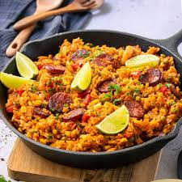

Chorizos and Rice

Description
Old world recipe from the Basque country. Savory chorizo against a backdrop of savory peppers and rice.
Ingredient List
- 3-4 chorizos
- 1 cup Uncle Ben's converted rice
- 1 onion
- 1 green pepper
- 7-9 oz jar of pimientos
- 1 tbsp garlic salt (or subsitute 1 tsp salt and 3 minced garlic cloves).
Directions
- Cut up chorizos into 1/2 to 1 inch slices.
- Fill a pot with 4-6 cups of water and boil chorizos at a slow boil for 30-45 minutes.
- Cut up onion, green pepper and pimiento.
- measure 7 1/2 cups of water and include water the chorizos were cooked in.
- Put chorizos, rice, peppers, onion, pimiento and garlic salt in the pot of water.
- Bring to boil and cook on low until rice is tender, about 20 minutes.
- Do not overcook.
- Enjoy!
Home